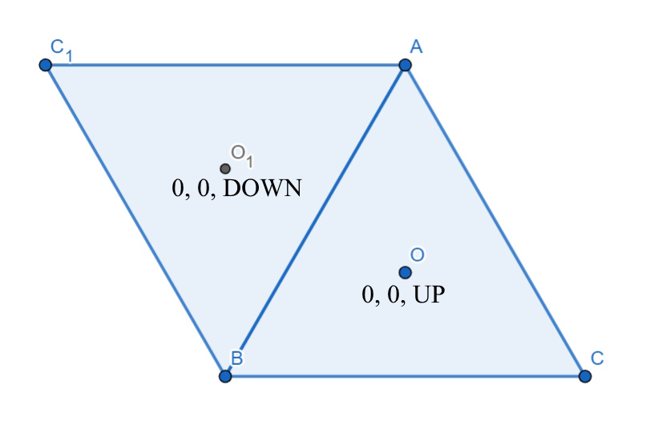
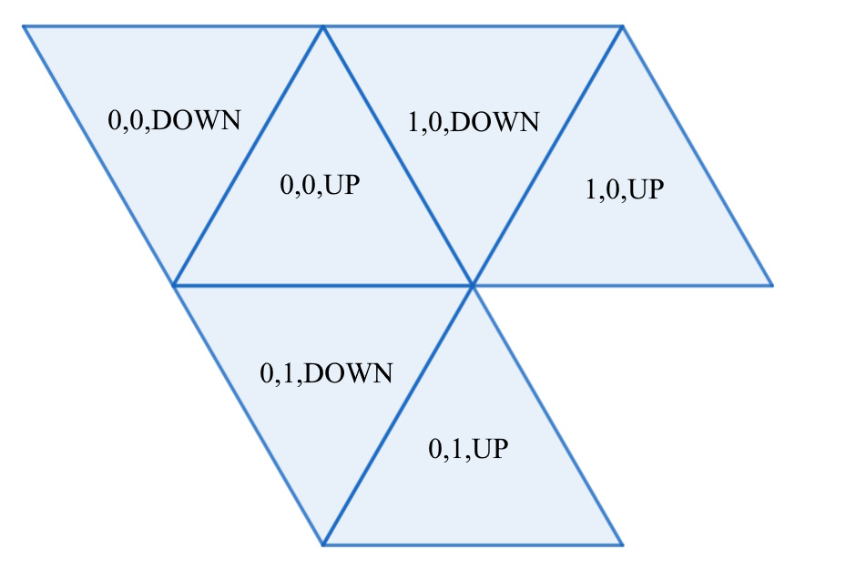

This is a guide on how to place equilateral triangles in a grid formation. It is important to note that this guide makes 4 assumptions about this grid. Your math may vary if slightly with a different implementation. The first assumption is that triangles either point straight up or straight down. The second is that Y coordinates increase as they go down, instead of decreasing. The third and fourth assumption will be discussed later.
There are a few ways to represent a triangles position in grid coordinates. For our purposes, our triangle's grid position is represented by an A coordinate, a B coordinate, and the triangle's direction. This coordinate system was adapted from this guide.
The triangles depicted above have their grid coordinates displayed in text. The first 0 represents the A coordinate of both triangles, and the second 0 represents the B coordinate of both triangles. The triangle's direction can either be UP or DOWN. This can be represented as a 1 or a 0 if you would prefer. (All Triangles here have been drawn with GeoGebra .)
The A coordinate is fairly intuitive to understand. As you can see in the image above, the (1,0,UP) triangle is to the right of the (0,0,UP triangle). This makes it pretty similar to the X axis in cartesian coordinates. However, with the B coordinate, you can see that the (0,1,UP) is down and to the right of the (0,0,UP) triangle. This is something you have to account for when doing any math that turns grid coordinates into cartesian coordinates, as the B coordinate affects both the X and Y axes.
To make the math easier to explain, let's establish some important constants and terms that we will be working with frequently when doing calculations with equalateral triangles.
We will use these terms to find the centrdoid of a triangle in cartesian coordinates
based on its grid coordinates. For now we are going to ignore the Up/Down coordinate,
we can implement that math after we handle the A and B coordinates.
These calculations are based on the third assumption, that (0,0) in cartesian coordinates
is equivalent to the centroid of the (0,0,UP) triangle.
The X axis is affected by both the A and B coordinates, as we saw in the second image.
(1,0,UP) and (0,0,UP) are only one edge length apart. This means A contributes A * E
to the X axis. Meanwhile B contributes half an edge length, or B * E / 2
The Y axis is only affected by the B coordinate. (0,1,UP) and (0,0,UP) are only
one H apart, so B contributes B * H to the Y axis.
The equations so far for calculating X and Y look like this:
X = (A * E) + (B * E / 2)
Y = (B * H)
However, this isn't enough to calculate the positions, as we neglected the directional coordinate.
If a triangle is (0,0,DOWN), it needs to be moved E / 2 to the left of (0,0,UP).
Determining how it is moved on the Y axis is a little more complex. Keep in mind that
the centroid of a triangle is not placed at half the triangle's height.
The (0,0,DOWN) centroid actually ends up being (1 / 3) * H higher than the (0,0,UP) triangle.
Remember how the UP/DOWN coordinate can be represented as a 1 or 0?
We can use that in our final equations. In this case DOWN = 1, and UP = 0. Dir will be a variable
that represents the direction coordinate of the triangle.
Our final equations look like this:
X = (A * E) + (B * E / 2) + (Dir * -E / 2)
Y = (B * H) + (Dir * -(1 / 3) * H)
Knowing the center isn't actually as useful as finding the verticies, but I find it makes the math for finding the verticies of a triangle a little simpler.
The fourth assumption is that the verticies of the triangle are wound counter-clockwise.
The winding of your verticies is pretty important for things like graphics programming.
This means if your triangle is represented as a list of 3 points, the order those points
are in the list determines which way the triangle is wound. Since we have already calculated
the centroid's cartesian coordinates, Cx will be a variable that represents the centroid's X
component, and Cy will be a variable that represents the centroid's Y component.
For an upwards facing triangle, the verticies can be calculated like so:
V1 = (Cx , -(2 / 3) * H + Cy)
V2 = (Cx - E / 2, (1 / 3) * H + Cy)
V3 = (Cx + E / 2, (1 / 3) * H + Cy)
For a downwards facing triangle, all you need to do is invert each of these points. A sometimes useful property of calculating the points this way is that V2 and V3 always stay at the same height.
That is about it for this guide on triangle math, but I will end this with a table of data
for a few triangles. Keep in mind, the Y axis increases downwards for this math. Plugging
this data straight into
GeoGebra
or anything similar that expects Y to increase upwards will result in everything being upside-down.
For an edge length of 10:
| Grid Coordinate | Vertex 1 | Vertex 2 | Vertex 3 |
|---|---|---|---|
| (0,0,UP) | (0, -5.7735) | (-5, 2.8868) | (5, 2.8868) |
| (0,0,DOWN) | (-5, 2.8868) | (0, -5.7735) | (-10, -5.7735) |
| (1,0,UP) | (10, -5.7735) | (5, 2.8868) | (15, 2.8868) |
| (1,0,DOWN) | (5, 2.8868) | (10, -5.7735) | (0, -5.7735) |
| (0,1,UP) | (5, 2.8868) | (0, 11.547) | (10, 11.547) |
| (0,1,DOWN) | (0, 11.547) | (5, 2.8868) | (-5, 2.8868) |